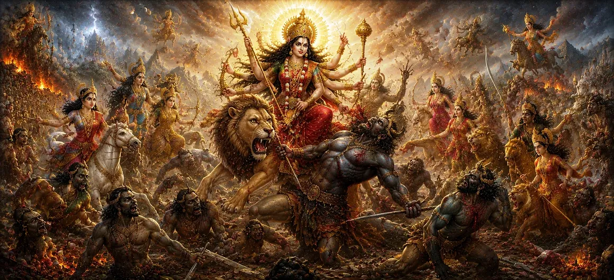

धूम्रलोचन, चंड, मुंड तथा रक्तबीज का वध
अध्याय 46 में देवी महालक्ष्मी के मनोहर रहस्योद्घाटन के बाद, उमा संहिता का सैंतालीसवां अध्याय उच्च तीव्रता वाली ब्रह्मांडीय कार्रवाई में उतरता है, जिसमें दुर्जेय असुर शक्तियों के खिलाफ भयंकर युद्धों का विवरण दिया गया है।
यह अध्याय दैवीय माँ की क्रोधपूर्ण और सुरक्षात्मक शक्ति द्वारा अभिमानी सेनापतियों धूम्रलोचन, चंदा, मुंडा और प्रतिकृति-शापित राक्षस रक्तबीज के महाकाव्य विनाश का वर्णन करता है।
विशद वर्णनों के माध्यम से, पाठ दर्शाता है कि कैसे दैवीय न्याय सृष्टि की रक्षा के लिए बिना किसी समझौते के अधर्म को समाप्त करता है।
अध्याय 47 की मुख्य बातें
युद्धक्षेत्र लामबंदी
टकराव का वर्णन राक्षसी सेनाओं द्वारा दैवीय ब्रह्मांडीय व्यवस्था को चुनौती देने के रूप में किया गया है।
धूम्रलोचन का वध
युद्ध की शुरुआत में धुँधली आँखों वाले जनरल के त्वरित विनाश का विवरण।
चंदा और मुण्ड की पराजय
देवी चामुंडा द्वारा उनके भयंकर युद्ध और अंतिम हार पर प्रकाश डाला गया।
रक्तबीज का रहस्य
उस खतरनाक वरदान की खोज करता है जहां रक्त की प्रत्येक बूंद से एक नया राक्षस पैदा होता है।
क्लोनों का विनाश
दिखाता है कि कैसे देवी ने गुणा और जीत को रोकने के लिए उसके खून का सेवन किया।
न्याय की विजय
महाकाव्य लड़ाइयों के बाद शांति और धर्म की बहाली का जश्न मनाता है।
इस अध्याय में मुख्य विषय
- 01 राक्षसी उत्तेजना और स्वर्ग के लिए खतरा →
- 02 जनरल धूम्रलोचन का तीव्र विनाश →
- 03 चंदा और मुंडा के साथ भयंकर सगाई →
- 04 युद्धभूमि में देवी चामुंडा का प्राकट्य →
- 05 रक्तबीज और उसका खतरनाक प्रतिकृति वरदान →
- 06 राक्षसी क्लोनों को बढ़ाने का सामरिक संकट →
- 07 रक्त पीने की दैवीय रणनीति का कार्यान्वयन →
- 08 रक्तबीज का परम वध एवं पतन →
- 09 युद्धों का गूढ़ एवं आध्यात्मिक महत्व →
- 10 देवी सरस्वती के प्रकटीकरण में परिवर्तन →
राक्षसी उत्तेजना और स्वर्ग के लिए खतरा
अध्याय 47 की शुरुआत अहंकार से प्रेरित अंधेरी ताकतों के रूप में होती है, जो दिव्य मां को चुनौती देने के लिए अपने सेनापतियों को भेजते हैं, जिससे युद्ध के मैदान पर निर्णायक टकराव होता है।
सेनाओं के टकराने से ब्रह्मांड का संतुलन अधर में लटक जाता है।
जनरल धूम्रलोचन का तीव्र विनाश
राक्षस धूम्रलोचन देवी को पकड़ने के लिए अहंकारपूर्वक आगे बढ़ता है, लेकिन उग्र अस्वीकृति की दहाड़ मात्र से, वह तुरंत राख में तब्दील हो जाता है, जो राक्षसी सेना के विनाश का संकेत है।
उसका अपार अभिमान दैवीय शक्ति के एक ही क्षण में गायब हो जाता है।
चंदा और मुंडा के साथ भयंकर सगाई
धूम्रलोचन के पतन के बाद, शक्तिशाली सेनापति चंदा और मुंडा ने बड़े पैमाने पर सुदृढ़ीकरण सैनिकों के साथ हमला किया, हथियारों और काले जादू की भयानक बौछार की।
लड़ाई लौकिक शक्ति की क्रूर परीक्षा में बदल जाती है।
युद्धभूमि में देवी चामुंडा का प्राकट्य
चंदा और मुंड की आक्रामकता के जवाब में, देवी का एक काला, उग्र रूप - चामुंडा - उसकी तीसरी आंख से फूट पड़ा, जिसने असुरों को एक भयानक द्वंद्व में उलझा दिया और तेजी से उन दोनों को मार डाला।
उसकी विजयी दहाड़ पूरे ब्रह्माण्ड में गूँज उठती है।
रक्तबीज और उसका खतरनाक प्रतिकृति वरदान
इन पराजयों से आहत होकर, सर्वोच्च राक्षस रक्तबीज एक विशेष वरदान से लैस होकर मैदान में प्रवेश करता है: उसके शरीर से गिरने वाली रक्त की हर एक बूंद तुरंत समान शक्ति का एक डुप्लिकेट राक्षस पैदा करती है।
यह अनोखा अभिशाप पारंपरिक युद्ध को एक असंभव जाल में बदल देता है।
राक्षसी क्लोनों को बढ़ाने का सामरिक संकट
जैसे ही देवता रक्तबीज पर हथियारों से हमला करते हैं, उसके बिखरे खून से हजारों समान क्लोन उभर आते हैं, युद्ध के मैदान में बाढ़ आ जाती है और बड़ी संख्या में धार्मिक ताकतों पर भारी पड़ जाते हैं।
जैसे-जैसे गुणा-भाग अंतहीन लगता है, दहशत फैलने का खतरा है।
(स्रोत: उमा संहिता अध्याय 47)
रक्त पीने की दैवीय रणनीति का कार्यान्वयन
वरदान में दोष को पहचानते हुए, देवी एक शानदार रणनीति अपनाती है: वह महाकाली और उसके उग्र स्वरूपों को रक्तबीज के रक्त की हर बूंद को जमीन को छूने से पहले निगलने का आदेश देती है।
एक भी बूंद को इस ब्रह्मांडीय जाल से बचने की अनुमति नहीं है।
(स्रोत: उमा संहिता अध्याय 47)
रक्तबीज का परम वध एवं पतन
अपने रक्त-प्रतिकृति तंत्र से वंचित, रक्तबीज अंततः देवी के हथियार से मारा जाता है, और पृथ्वी पर निर्जीव होकर गिर जाता है क्योंकि शेष क्लोन शून्य में गायब हो जाते हैं।
दिव्य बुद्धि से भयावह संकट का सर्वथा निवारण हो जाता है।
(स्रोत: उमा संहिता अध्याय 47)
युद्धों का गूढ़ एवं आध्यात्मिक महत्व
दार्शनिक रूप से, रक्तबीज बार-बार आने वाली बुरी आदतों, पुरानी मानसिक अशुद्धियों और अहंकार के बढ़ते जाल का प्रतिनिधित्व करता है, जो पूरी तरह से जड़ से खत्म न होने पर भी पुनर्जीवित हो जाते हैं।
उसे मारने के लिए नकारात्मकता के स्रोत का पूर्ण उन्मूलन आवश्यक है।
(स्रोत: उमा संहिता अध्याय 47)
देवी सरस्वती के प्रकटीकरण में परिवर्तन
अध्याय 47 में इन दुर्जेय राक्षसी सेनापतिों को सफलतापूर्वक परास्त करने के बाद, कथा अध्याय 48 में एक सामंजस्यपूर्ण बदलाव की तैयारी करती है।
यह पाठ देवी सरस्वती की गौरवशाली अभिव्यक्ति के लिए मंच तैयार करता है, जिससे ज्ञान, कला और सर्वोच्च ज्ञान प्रकाश में आता है।
(स्रोत: उमा संहिता अध्याय 47)
अध्याय 47 की मुख्य शिक्षाएँ
अपरिहार्य न्याय
दैवीय शक्ति से सामना होने पर अहंकार और अधर्म का तेजी से विनाश होता है।
भूख से मर रही नकारात्मकता
रक्तबीज की तरह, खिलाए जाने पर पुराने विकार बढ़ जाते हैं; उन्हें जड़ से पूरी तरह से भूखा रखा जाना चाहिए।
सामरिक बुद्धि
जटिल आध्यात्मिक बाधाओं पर काबू पाने के लिए बुद्धिमत्ता और रणनीतिक दैवीय अनुकूलन की आवश्यकता होती है।
निडर रक्षा
दिव्य माँ अपनी रचना को सभी प्रकार के बुरे आक्रमणों से दृढ़तापूर्वक बचाती है।
अहंकार को मिटाना
चंदा और मुंडा जैसे सेनापति जिद्दी अहंकार का प्रतिनिधित्व करते हैं जिसे कुचल दिया जाना चाहिए।
व्यवस्था की बहाली
लौकिक युद्धों में विजय शांति, सद्भाव और धर्म को पुनः स्थापित करती है।
आध्यात्मिक चिंतन
उमा संहिता का अध्याय 47, धूम्रलोचन, चंदा, मुंडा और रक्तबीज जैसी राक्षसी संस्थाओं के विनाश पर प्रकाश डालते हुए, ब्रह्मांडीय युद्ध की एक एक्शन से भरपूर कथा प्रदान करता है। आध्यात्मिक स्तर पर, ये लड़ाइयाँ उस आंतरिक संघर्ष को प्रतिबिंबित करती हैं जिसका सामना प्रत्येक साधक को बढ़ती मानसिक अशुद्धियों, बार-बार आने वाली बुरी आदतों और अहंकारी प्रतिरोध के खिलाफ करना पड़ता है। जिस प्रकार रक्तबीज के क्लोनों को केवल उनके पोषण के स्रोत को काटकर ही रोका जा सकता है, उसी प्रकार हमारे आंतरिक विकारों को ऊर्जा से वंचित किया जाना चाहिए और सतर्कता, आत्म-अनुशासन और देवी माँ की सुरक्षात्मक कृपा के माध्यम से व्यवस्थित रूप से समाप्त किया जाना चाहिए।
अध्याय 47 का संदेश जीना
अपने जीवन में बार-बार दोहराई जाने वाली बुरी आदतों या नकारात्मक विचार पैटर्न को पहचानें और सचेत रूप से उन्हें ध्यान और ऊर्जा से वंचित करें।
व्यक्तिगत और आध्यात्मिक चुनौतियों का सामना हताशा के बजाय सामरिक बुद्धिमत्ता और अटूट दृढ़ संकल्प के साथ करें।
अपने मन को विनाशकारी मानसिक प्रवृत्तियों के आक्रमण से बचाने के लिए दिव्य माँ की आंतरिक शक्ति की तलाश करें।
प्रमुख आध्यात्मिक अवधारणाएँ
धुँधली आँखों वाला राक्षसी सेनापति जिसके अहंकार के कारण उसका तत्काल विनाश हुआ।
देवी चामुंडा के प्रचंड तेज से शक्तिशाली राक्षसी सेनापति पराजित हो गये।
दानव को वरदान मिला कि रक्त की हर बूंद से एक क्लोन उत्पन्न होगा।
अँधेरी शक्तियों को परास्त करने के लिए बनाई गई देवी की एक उग्र, शक्तिशाली उत्पत्ति।
पुनर्स्थापना के लिए लौकिक विघटन या अधर्म का विनाश आवश्यक है।
दैवीय शक्ति और आध्यात्मिक शक्ति जो आसुरी अहंकार पर सदैव विजय प्राप्त करती है।
अध्याय सारांश
उमा संहिता अध्याय 47 ब्रह्मांडीय युद्ध का एक महाकाव्य विवरण प्रस्तुत करता है, जिसमें अहंकारी राक्षसी सेनापतिों धूम्रलोचन, चंदा, मुंडा और प्रतिकृति-शापित रक्तबीज की क्रमिक हत्या का विवरण दिया गया है। देवी चामुंडा और उसके उग्र साथियों के माध्यम से रक्त-संभोग जैसी शानदार रणनीतियों को नियोजित करके, दिव्य माँ असंभव खतरों को बेअसर करती है और ब्रह्मांडीय व्यवस्था को बहाल करती है। यह रोमांचक जीत अध्याय 48 में देवी सरस्वती की शांतिपूर्ण और ज्ञानवर्धक अभिव्यक्ति का मार्ग प्रशस्त करती है।
अक्सर पूछे जाने वाले प्रश्न
① उमा संहिता अध्याय 47 का मुख्य विषय क्या है?
मुख्य विषय गहन ब्रह्मांडीय युद्ध और दिव्य माँ द्वारा धूम्रलोचन, चंदा, मुंडा और रक्तबीज सहित शक्तिशाली राक्षसी सेनापतिों का विनाश है।
② अध्याय 47 अध्याय 46 का अनुसरण कैसे करता है?
अध्याय 46 में देवी महालक्ष्मी की निरंतर कृपा और प्रचुरता को प्रस्तुत करने के बाद, अध्याय 47 ब्रह्मांडीय व्यवस्था को खतरे में डालने वाली ताकतों के खिलाफ सक्रिय सुरक्षात्मक युद्ध में बदल जाता है।
③ राक्षस रक्तबीज के बारे में क्या अनोखी बात थी?
रक्तबीज के शरीर से जमीन पर गिरने वाली रक्त की प्रत्येक बूंद ने तुरंत समान शक्ति के साथ एक नया क्लोन दानव उत्पन्न किया, जिसने देवी द्वारा पराजित एक अद्वितीय सामरिक चुनौती पेश की।
④ अध्याय 47 अध्याय 48 से कैसे जुड़ता है?
अध्याय 47 सीधे अध्याय 48 में प्रवाहित होता है, जो देवी सरस्वती की अभिव्यक्ति का विवरण देकर कथा क्रम को जारी रखता है।
⑤ इन असुरों को मारने के पीछे आध्यात्मिक प्रतीकवाद क्या है?
इन असुरों को मारना जिद्दी अहंकार, पुरानी नकारात्मक आदतों, भ्रम और आध्यात्मिक विकास में बाधा डालने वाली बढ़ती मानसिक अशुद्धियों के उन्मूलन का प्रतीक है।
⑥ इस कथा में चंदा और मुंडा को कौन हराता है?
युद्ध के दौरान चंदा और मुंडा का देवी चामुंडा (दिव्य माँ की एक भयंकर अभिव्यक्ति) द्वारा जमकर सामना किया गया और उन्हें हराया गया।
"भयंकर युद्ध और सर्वोच्च दिव्य रणनीति के माध्यम से, देवी अहंकार और अधर्म का विनाश करती है, ब्रह्मांड में शाश्वत शांति और धर्म बहाल करती है।"
उमा संहिता के माध्यम से जारी रखें
अध्याय 47 में धूम्रलोचन, चंदा, मुंडा और रक्तबीज के महाकाव्य वध का विवरण दिया गया है। इन युद्धों के समापन के साथ, देवी सरस्वती के प्रकटीकरण को देखने के लिए अध्याय 48 में आगे बढ़ें।